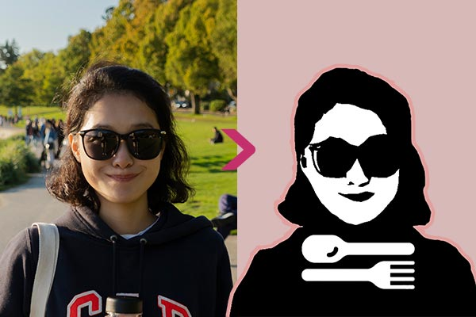
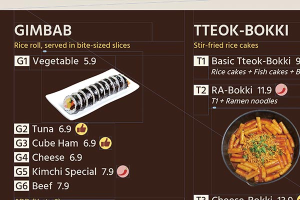
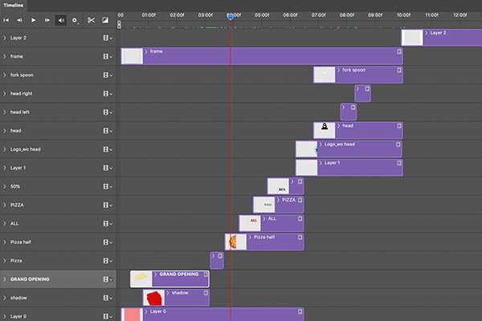

Park's Kitchen is a made-up bistro brand that serves light Asian meals for young people who have tight pocketbooks. A woman's face, likely to have a secret magic recipe, was inspired to make the logo. After selecting colours and fonts that are little retro-styled but young people would prefer, I developed logotypes and menu boards. Each menu has a unique number and recommended menu icon along with a photo so that customers can easily identify menus.
Branding
Develop the brand identity along with visual assets to match it.

Logo production: To naturally depict the woman's face, a picture taken by myself was used to make a logo with the motif.

Menu Design: I thought that the most important thing in menu design was menus are highly findable from the customer's point of view, and the unfamiliar menu was to accompany the description or picture well. To this end, they were arranged as concise as possible, all menus were given IDs for easy ordering, and icons were used for recommended menus and spicy foods.

GIF Production: Creating a square GIF with 300px by 300px for online banner use. High saturation colours were used to attract people's attention in the online environment, and it was designed to keep the motion moving rhythmically.